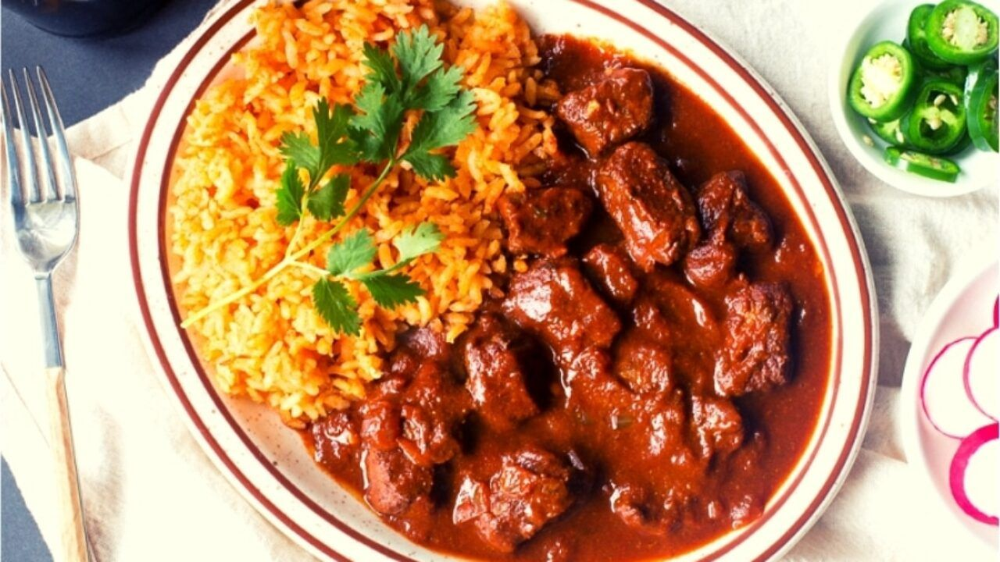

S
Asado De Puerco Recipe

With one of the best recipes around the world, there is Asado de Puerco. Loaded with it's spicy sauce makes it one of the best dishes to make at home.
Ingredients
- 1 medium green bell pepper, ribs and seeds removed, coarsely chopped
- 1 medium red bell pepper, ribs and seeds removed, coarsely chopped
- 1/2 small bunch cilantro, leaves with tender stems picked
- 6 garlic cloves
- 2 Tbsp. extra-virgin olive oil
- 1 Tbsp. Diamond Crystal or 1¾ tsp. Morton kosher salt
Stew and Assembly
- 4 tsp. ground cumin
- 1 Tbsp. powdered adobo seasoning (preferably Loisa)
- 1 tsp. ground turmeric
- 1 tsp. paprika
- 8 skin-on, bone-in chicken thighs (about 3 lb.)
- 1 Tbsp. extra-virgin olive oil
- 1 medium onion, finely chopped
- 4 garlic cloves, finely chopped
- 1 Tbsp. tomato paste
- 1 8-oz. can tomato sauce
- 2 1/2 cups low-sodium chicken broth
- 1 cup pitted manzanilla olives
- 1 Kosher salt
- 1 Steamed rice, cilantro leaves with tender stems, and lime wedges (for serving)
Steps
- Pulse 1 medium green bell pepper, ribs and seeds removed, coarsely chopped, 1 medium red bell
pepper, ribs and seeds removed, coarsely chopped, ½ small bunch cilantro, leaves with tender stems
picked, 6 garlic cloves, 2 Tbsp. extra-virgin olive oil, and 1 Tbsp. Diamond Crystal or 1¾ tsp.
Morton kosher salt in a food processor until a coarse purée forms. (Makes about 2¼ cups.) Do ahead:
Sofrito can be made 3 days ahead. Transfer to an airtight container; cover and chill, or freeze up
to 1 month.
- Whisk 4 tsp. ground cumin, 1 Tbsp. powdered adobo seasoning, 1 tsp. ground turmeric, and 1 tsp.
paprika in a small bowl. Sprinkle half of spice mixture all over 8 skin-on, bone-in chicken thighs
(about 3 lb.).
- Heat 1 Tbsp. extra-virgin olive oil in a large Dutch oven or other heavy pot over medium. Working
in batches, arrange chicken, skin side down, in pot and cook, undisturbed, until skin is golden brown,
8-10 minutes. Turn over and cook until other side is browned, about 5 minutes. Transfer chicken to a
plate.
- Add 1 medium onion, finely chopped, and 4 garlic cloves, finely chopped, to pot and cook,
stirring often, until onion is softened and translucent, about 5 minutes. Add 1 Tbsp. tomato paste
and cook, stirring, 1 minute. Stir in ½ cup sofrito and remaining spice mixture and cook, stirring,
until fragrant and mixture is slightly darkened, about 3 minutes. Pour in one 8-oz. can tomato sauce
and 2½ cups low-sodium chicken broth; stir to combine, scraping up any browned bits stuck to bottom
of pot.
- Return chicken pieces to pot, arranging skin side up, and bring stew to a simmer. Cover with a
lid and cook, adjusting heat as needed to maintain a simmer, until chicken is cooked through, 25-30 minutes.
- Uncover pot and stir in 1 cup pitted manzanilla olives. Simmer, stirring occasionally, until stew
is slightly reduced, about 5 minutes. Remove from heat. Taste stew and season with kosher salt if
needed.
- To serve, divide steamed rice among bowls and ladle stew over; top with cilantro leaves with
tender stems. Serve with lime wedges.